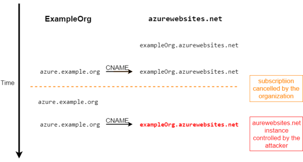
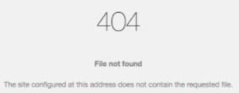

Subdomain Takeover
A subdomain takeover occurs when an attacker gains control over a subdomain of a target domain. Typically, this happens when the subdomain has a canonical name (CNAME) in the Domain Name System (DNS), but no host is providing content for it.
ATTENTION: Subdomain takeover is not limited to CNAME records. NS, MX and even A records (which are not subject to this post) are affected as well.
Typical Scenario
An organization, ExampleOrg, whose domain name is
example.org, wants to use some service from the vendor
azurewebsites.net1. ExampleOrg register an account at
azurewebsites.net and create an instance of their service, which is accessible at
exampleOrg.azurewebsites.net2. For brand-consistency reasons, ExampleOrg organization made the
exampleOrg.azurewebsites.net instance accessible from one of its subdomains:
azure.example.org. No problem, as
azurewebsites.net allows to do that. ExampleOrg organization need only to create a CNAME record that points
azure.example.org to
exampleOrg.azurewebsites.net.
3.
ATTENTION: when and if the organization decides to cancel its azurewebsites.net subscription, the
exampleOrg.azurewebsites.net instance is deleted but, if the organization forget to remove the associated CNAME record, this could be a vulnerability!
4. An attacker could notices the dangling CNAME record. Because TipTop doesn't prevent anyone from reclaiming the
example-dot-org instance name on their platform, the attacker is able to create his
azurewebsites.net instance at
exampleOrg.azurewebsites.net, which the subdomain
azure.example.org still points to! From then on, and for as long as the CNAME record remains, the attacker has control over the content served by your subdomain.
How find the Vulnerability
1.
Find the CNAMEA Canonical Name record (CNAME) is a type of resource record in the Domain Name System (DNS) that maps one domain name (an alias) to another (the canonical name).
dig +noall +answer subdomain.domain.com # in alternative use nslookup
whois [ipAddress] | grep "org-name"
2.
How check if a subdomain takeover is possible? A subdomain takeover
is possible if:
◇ the CNAME (point
1) point to domain name hosted by a third service(example: azurewebsites.net, Zendesk.com,...) which domain name is not been claimed
◇ the ip address on point
2 belongs to a third part service (example: GitHub Inc., AWS, Microsoft Azure, Heroku, Shopify ...) which istance no longer exists. These cloud services provide a way of specifying alternate domain names (CNAME records), because of that we need to check the owner of the ip address
To check if we can claim the domain name or ip address hosted by the Third Party we need to go to their website and check manually  Automation Tools:
•
subjack install: “go get github.com/haccer/subjack”
The subdomains that we will scan, will be also the ones NOT alive
subjack -w subdomainsToScan.txt -t 100 -timeout 30 -ssl -c ~/go/src/github.com/haccer/subjack/fingerprints.json -v 3 >> potential_takeovers.txt
cat potential_takeovers.txt
Bibliography:
•
https://www.hackerone.com/application-security/guide-subdomain-takeovers•
https://0xpatrik.com/subdomain-takeover-basics/•
https://0xpatrik.com/subdomain-takeover/•
https://www.honeybadger.io/blog/subdomain-takeover/ {kind=link}